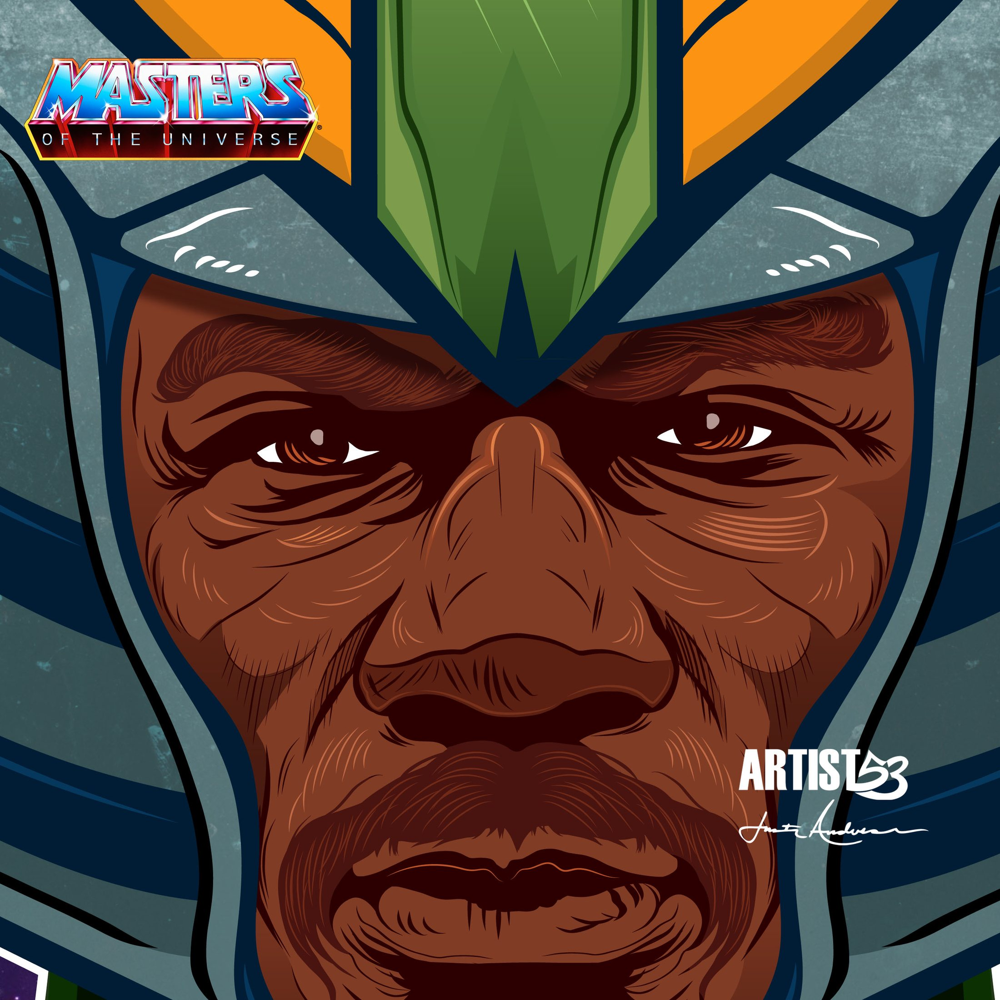
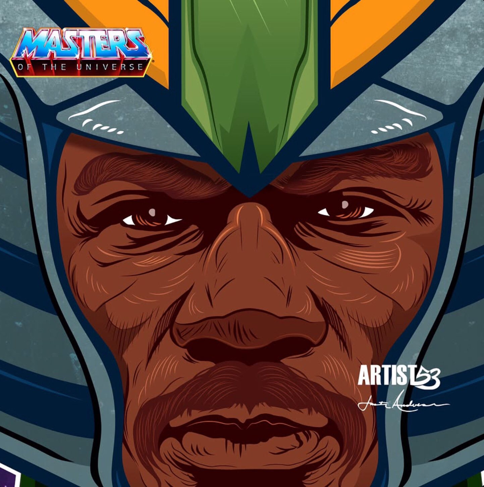

Masters of the Universe
Ving Rhames / Man-At-Arms
Ving Rhames imagined as Man-At-Arms from Masters of the Universe.
Back To IllustrationIllustration Video




Masters of the Universe
Ving Rhames imagined as Man-At-Arms from Masters of the Universe.
Back To IllustrationIllustration Video

